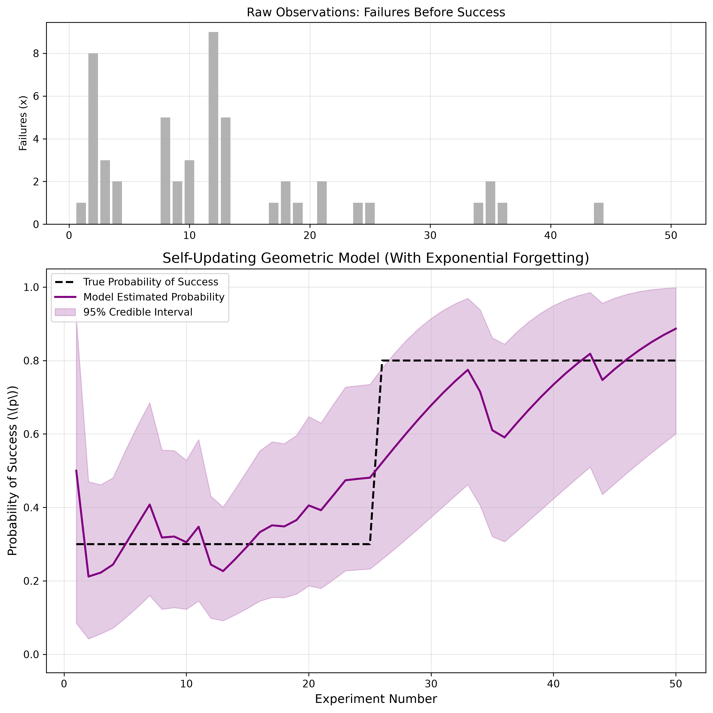

Geometric-Beta Conjugate Models with Exponential Forgetting
While the Poisson and Binomial models look at how many events occur in a fixed time, the Geometric distribution looks at the opposite: how long you have to wait until the first event occurs.
This is used extensively in reliability engineering (e.g., "How many days until a machine breaks?") and user experience tracking (e.g., "How many times will a user click 'Next' before they abandon the webpage?"). This chapter explores the Geometric-Beta model and how a forgetting factor allows it to detect sudden shifts in user patience or system reliability.
We want to estimate the probability of success, \(p\), based on the number of failures \(x\) observed before the very first success.
The probability of observing \(x\) failures followed by one success is:
Just like the Binomial model, the conjugate prior for the success probability \(p\) is the Beta distribution:
Multiplying the likelihood by the prior yields:
Because we observed exactly 1 success and \(x\) failures, the posterior is updated as follows:
The Expected Probability of success remains \(E[p] = \frac{\alpha}{\alpha + \beta}\).
If you are analyzing a system that never changes, the standard Geometric-Beta model is perfectly optimal. But what if user behavior shifts?
Suppose a "Skip" button is clicked rapidly (very few failures before success). If we redesign the UI and users suddenly get confused, they will click the button much later (many failures before success). The standard model will take a very long time to realize that the underlying probability of success has dropped because it is stubbornly clinging to its historical data.
To make the model agile, we introduce a forgetting factor \(f\). Before updating with the new data, we shrink our historical memory.
By continuously discounting old data, the model dynamically tracks the current state of the system, forgetting behavior that is no longer relevant.
In this simulation, an interface starts with a true success probability of 30% (meaning users typically experience 2 or 3 failures before success). At experiment 50, a new interface is introduced that is much more intuitive, jumping the success probability to 80% (users succeed almost immediately).

import numpy as np
import matplotlib.pyplot as plt
from scipy.stats import beta
import os
# Ensure the images directory exists
os.makedirs('images', exist_ok=True)
class FastOnlineGeometricModel:
def __init__(self, alpha_prior=1.0, beta_prior=1.0, forgetting_factor=1.0):
self.alpha = alpha_prior
self.beta = beta_prior
self.ff = forgetting_factor
def update(self, failures):
# Apply forgetting factor to old memory, then add new data
self.alpha = (self.alpha * self.ff) + 1
self.beta = (self.beta * self.ff) + failures
def get_expected_probability(self):
return self.alpha / (self.alpha + self.beta)
def get_credible_interval(self, confidence=0.95):
lp = (1.0 - confidence) / 2.0
up = 1.0 - lp
return beta.ppf(lp, self.alpha, self.beta), beta.ppf(up, self.alpha, self.beta)
# 1. GENERATE DATA (True prob jumps from 0.3 to 0.8 at step 50)
np.random.seed(42)
n_steps = 100
true_p_phase1 = 0.3
true_p_phase2 = 0.8
data_list = []
for i in range(n_steps):
true_p = true_p_phase1 if i < 50 else true_p_phase2
# np.random.geometric returns total trials (k >= 1). Failures = trials - 1
trials = np.random.geometric(true_p)
data_list.append(trials - 1)
# 2. INITIALIZE MODELS
standard_model = FastOnlineGeometricModel(forgetting_factor=1.0) # Static
fast_model = FastOnlineGeometricModel(forgetting_factor=0.85) # Dynamic
# Lists for plotting
std_probs, fast_probs = [], []
fast_lb, fast_ub = [], []
# 3. RUN SIMULATION
for failures in data_list:
standard_model.update(failures)
fast_model.update(failures)
std_probs.append(standard_model.get_expected_probability())
fast_probs.append(fast_model.get_expected_probability())
lb, ub = fast_model.get_credible_interval()
fast_lb.append(lb); fast_ub.append(ub)
# 4. PLOT
fig, (ax1, ax2) = plt.subplots(2, 1, figsize=(12, 8), gridspec_kw={'height_ratios': [1, 2]})
# Top plot: Raw Failures
ax1.bar(range(1, n_steps + 1), data_list, color='gray', alpha=0.6)
ax1.set_title('Raw Observations: Failures Before Success', fontsize=12)
ax1.set_ylabel('Failures (x)')
ax1.grid(True, alpha=0.3)
# Bottom plot: Probability tracking
ax2.plot(range(1, n_steps + 1), [0.3]*50 + [0.8]*50, 'k--', linewidth=2, label='True Probability')
ax2.plot(range(1, n_steps + 1), std_probs, 'b-', linewidth=2, alpha=0.5, label='Standard Bayes (Slow)')
ax2.plot(range(1, n_steps + 1), fast_probs, 'purple', linewidth=2.5, label='Forgetting Model (Fast)')
ax2.fill_between(range(1, n_steps + 1), fast_lb, fast_ub, color='purple', alpha=0.15, label='Fast Model 95% CI')
ax2.set_title('Speeding up Geometric-Beta Learning via Forgetting Factor', fontsize=14)
ax2.set_xlabel('Experiment Number')
ax2.set_ylabel(r'Probability of Success (\(p\))')
ax2.set_ylim(-0.05, 1.05)
ax2.legend(loc='upper left')
ax2.grid(True, alpha=0.3)
plt.tight_layout()
# Save to the images folder
plt.savefig('images/geometric_graph.png', dpi=300, bbox_inches='tight')
plt.show()